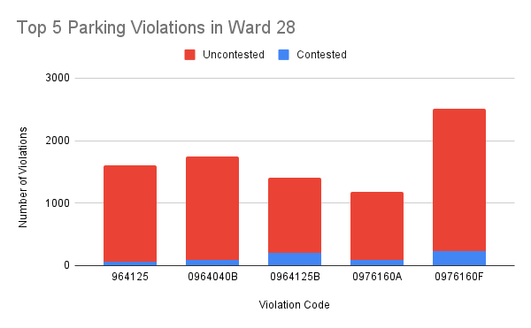
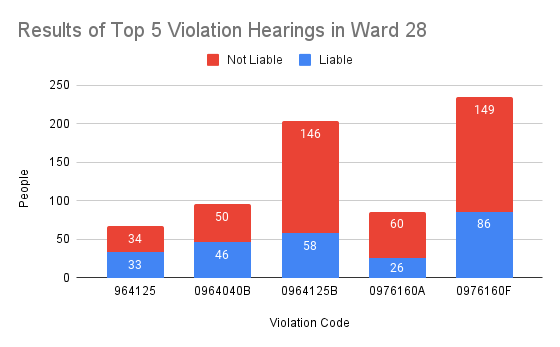
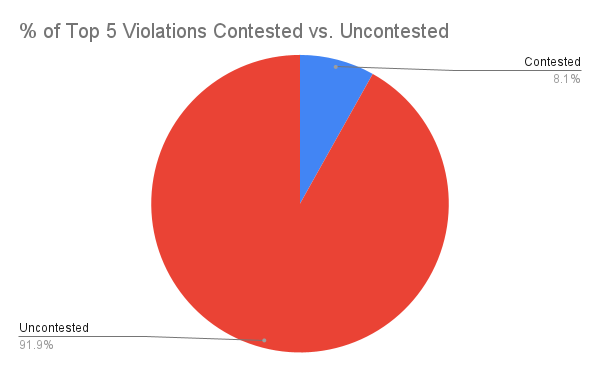
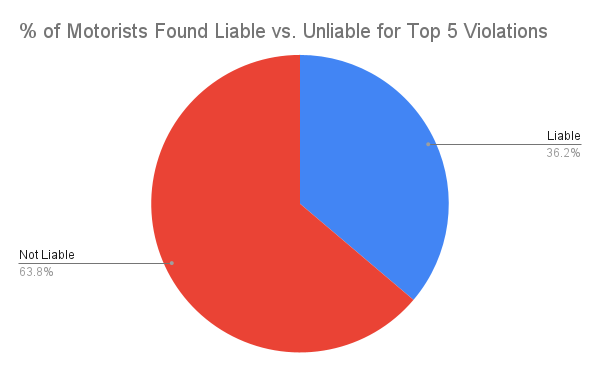

Have you ever gotten a ticket and thought to yourself, "Man, this is bogus! There is no way I'm liable for this!"? If so, you're in the right place! Take It to the Streets is a nonprofit organization that is dedicated to helping you win your day at traffic court.
Each year in Chicago, thousands of underprivileged and minority motorists find themselves spiraling into debt because of tickets they can't pay. For instance, those that find themselves with a fine for a missing or expired city sticker can't afford to pay to get a city sticker nor are they able to afford to pay the ticket. These motorists end up getting fined for the same offense that they are unable to rectify and rack up hundreds if not thousands of dollars owed to pay off their tickets, potentially leading to them losing their license or having their vehicle impounded. The 28th Ward contains many such motorists as it has a large proportion of underprivileged, minority constituents. The city's ticket policy is unfair and hurts wards like yours the most, which is why we have decided to "adopt" your ward in an effort to prevent you and your neighbors from suffering like so many others have.
Thinking about how unfair the city's ticket policy is, you might also be thinking to yourself that the process for appealing your ticket is stacked against you, too. This is not the case! Although the process seems intimidating, probably intentionally so, once you successfully schedule an appeal your chance of being let off the hook are quite high.
In the 28th Ward the most common traffic violations are missing or improper display of a city sticker (964125), vehicle parked during street cleaning (0964040B), no city sticker for a vehicle less 16k lbs (0964125B), missing rear and front plate (0976160A), and expired plates or temporary registration (0976160F). For each of these violations, if you choose to appeal you have a chance greater than 50% of winning, as you can see in our charts below.
   You can also see in the charts that most tickets go uncontested, despite the fact that those who contest them often come out on top. Do not make the same mistake as them! In some cases where motorists choose to let their tickets pile up, they are forced to file Chapter 13 bankruptcy in order to recover from the staggering amount they owe. The best way to avoid suffering crippling financial consequences from traffic tickets is to fight them rather than let them accrue. There is no need to stress or worry anymore about your tickets, because if you follow the steps we outline below, you'll be prepared to challenge any ticket that comes your way!
The following are a list of allowable defenses:
foobar
If your violation pertains to an expired city sticker or license plate you are also allowed these defenses:
foobar
Logos is an appeal to the audience's reason. When you make your appeal, you want to primarily rely on the logical appeal. You will want to explain to the judge clearly and with evidence how you did not actually commit the violation of which you were accused and cite the specific allowed defense that you are using to make your case.
Pathos is an appeal to the audience's emotions. This is the appeal that you avoid. The judge does not want to hear about how your sister is sick in the hospital because he's heard it all a million times before.
Ethos is an appeal to authority. Again, you should not very heavily rely on this rhetorical appeal when you are challenging your ticket. However, do ensure that you are addressing the judge with his proper title such as calling them "sir/ma'am" or "your honor"
foobar
Q: Should I appeal my ticket even if I am guilty of the violation?
A: It depends on the violation. For instance, if you are ticketed for not having an expired city sticker or license plate,
Q: What if I am unable to make it to court?
A: You can still appeal your ticket by mail. However, it is better if you show up to your trial live.